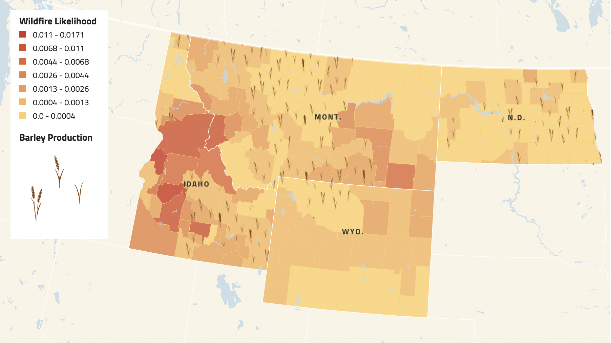
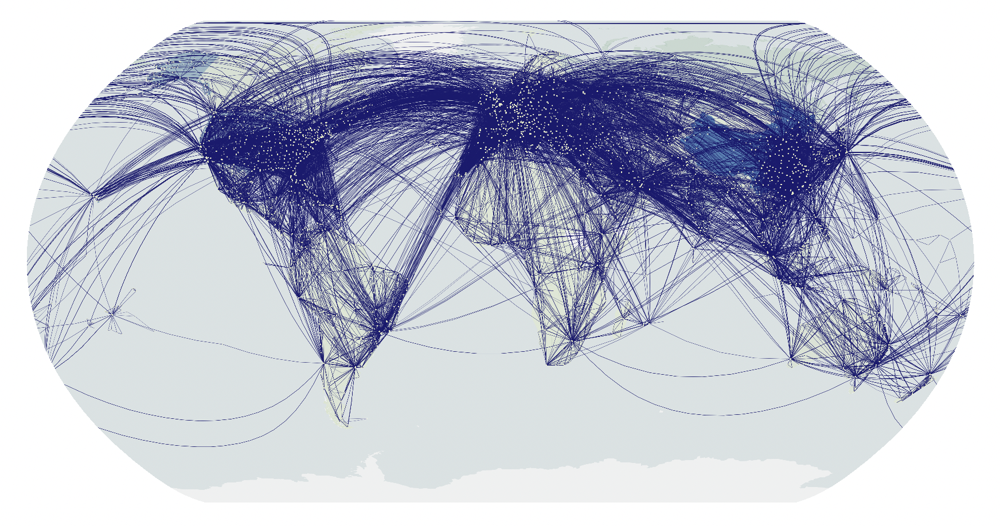
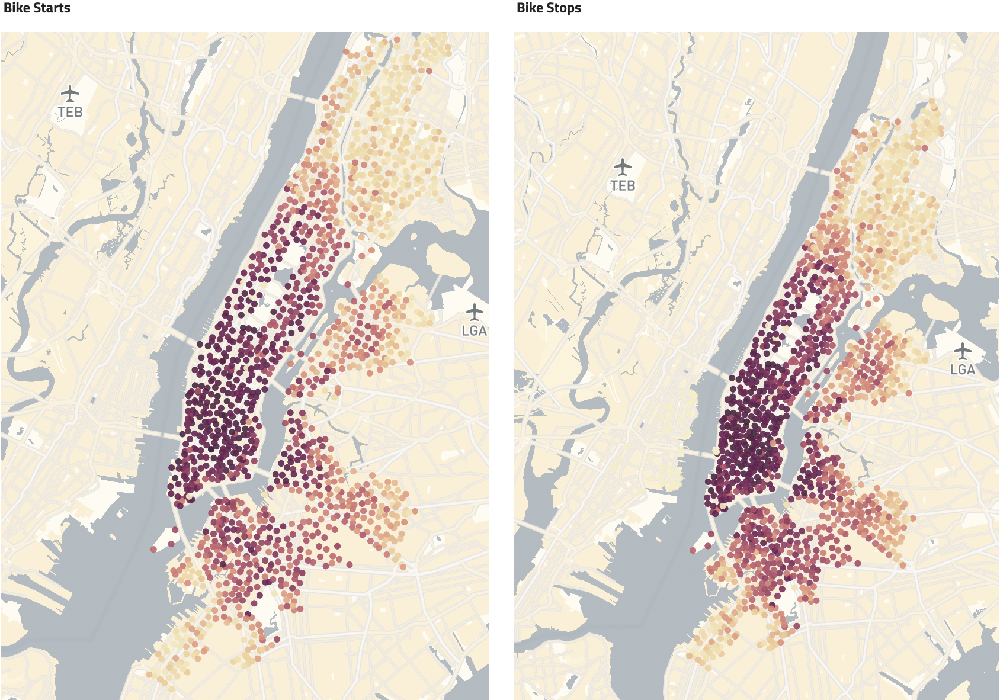
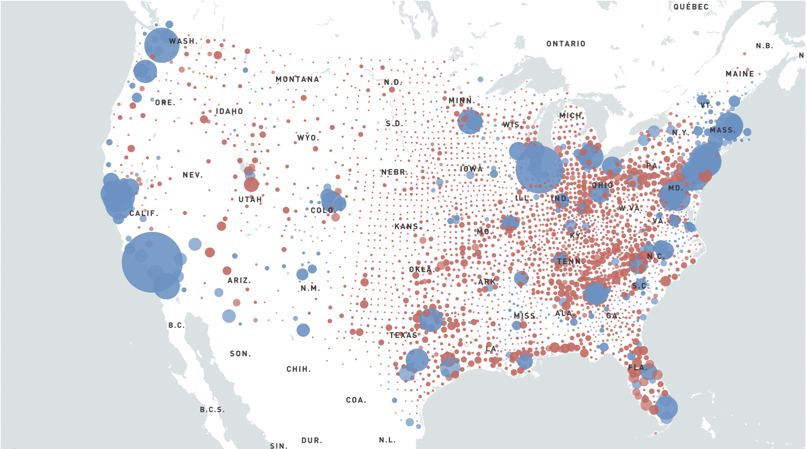
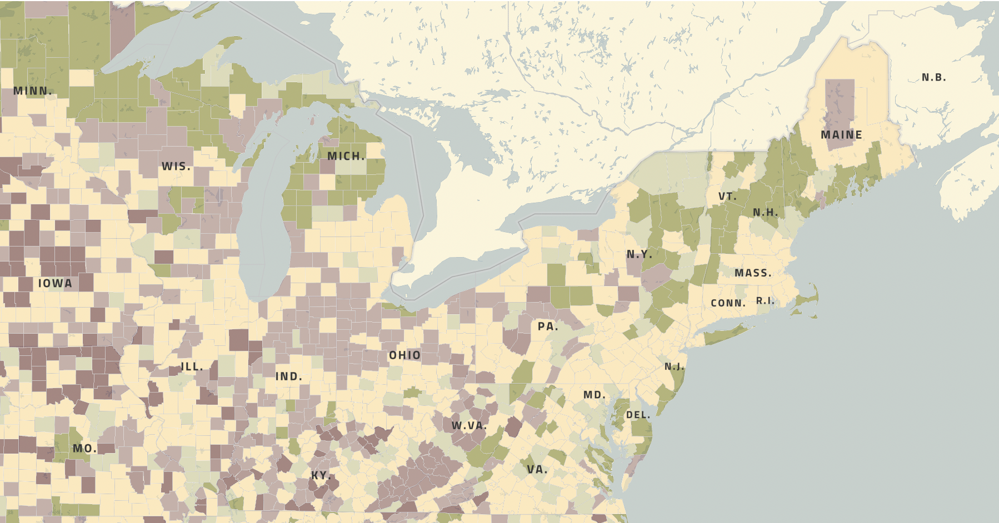
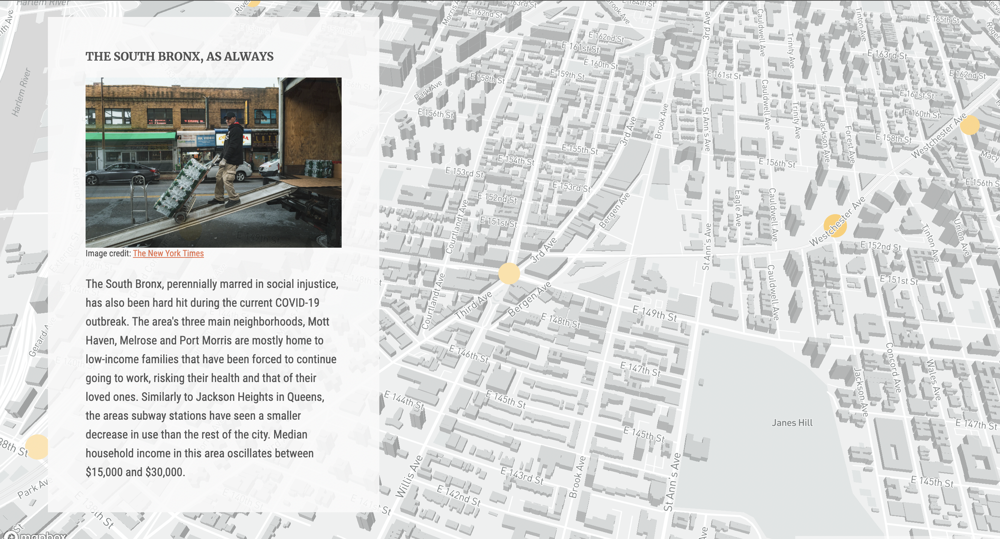

Susan Merriam
Projects
|
About
Columbia Journalism School Data Journalism Projects
Beer At Risk Map
Jun. 27, 2022

Clear-air Turbulence Map
Jun. 20, 2022

Citibike Maps
Jun. 13, 2022

Election Maps
Jun. 6, 2022

Mapping Exercises
Jun. 6, 2022

MTA Turnstile Exercise
Jun. 1, 2022
MTA Turnstile Storytelling Exercise
Jun. 1, 2022
